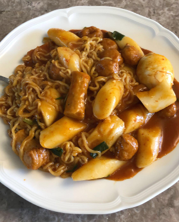

Featured Recipe - Ra-Tteokbokki (라볶이)
Ra-Tteokbokki is a Korean rice cake dish with many variations and a rich history. Literally translated as "stir-fried rice cake", is a rice cake dish with fish cake, ramen and egg in a sweet and spicey sauce.
Ingredients Needed
Make sure you have the following on hand before you begin.
- 1 Bag of Tteok
- Quart of Cold Water
- 6 Dashi
- Handful of Anchovies
- Quarter of an Onion
- 2 Tbs of Sugar
- 1 Tbs of Pepper powder
- 2 Tbs of Pepper Pasta
- 2 Tbs of Soysauce
- 1 Bag of Udon
- 2 Packets of Ramen
Instructions
- Soak frozen tteok is water for a few hours
- Add cold water to large pot.
- Add dashi, anchovies and onion to pot.
- Bring pot to a boil and let boil for 10 minutes with lid on.
- Take all solids out of pot, leaving newly created stock.
- Add sugar, pepper powder, pepper pasta and soysauce.
- Let continue to boil for a few minutes.
- Add udon, tteok and ramen until cooked.
- Once cooked remove, reduce heat and remove lid.
- Let simmer until reduced to your liking.
- Serve and enjoy!